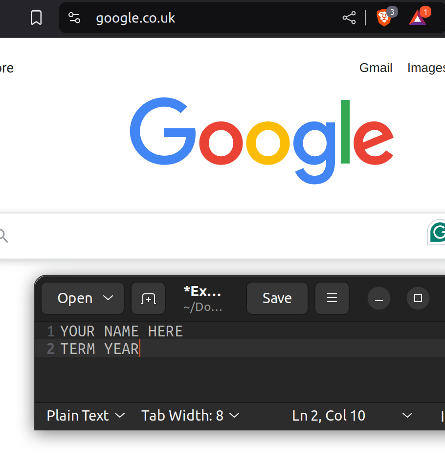

PDF Version Available
This document is also available in PDF format: dataintegrity.pdf
The PDF version includes bookmarks for easy navigation and is optimized for printing.
Accessibility Notice
This document is also available in HTML format at:
https://aholdengouveia.name/IntroData/labs/dataintegrity.html
The HTML version provides enhanced accessibility features including keyboard navigation, screen reader support, responsive design, dark mode support, and high contrast options.
Objectives:
- The goal of this lab assignment is for students to actively identify and address data integrity issues. Through hands-on analysis and problem-solving, students will gain practical experience in maintaining data quality
References, a video, a PowerPoint and some notes are available at my website https://www.aholdengouveia.name/IntroData/dataintegrity.html
To do this lab you need both the HalloweenCandy.csv data set, and the data set you collected in the previous lab on what is data. You will also need to use Google Sheets with the Simple ML extension. If you do not have a Google account, you can get one for free before doing this lab.
Before attempting this lab, watch this video on Simple ML for Google Sheets https://io.google/2023/program/e695ebdd-b968-4b85-98d9-0a722892e842/ to get an idea of what can be done with Machine Learning
The documentation for Google sheets can be found https://support.google.com/docs/topic/1361472?hl=en&sjid=7424903615941153253-NA
Each screenshot should have your name, term, and year. One of the easiest ways to do that is make a text document with your name and term/year on your computer and saving it to use all term. Any screenshots that don't include this information won't be counted.

Given Data set
Using the given data set HalloweenCandy.csv, we're going to actively explore the dataset and look for potential issues, including missing data, inconsistent formatting, duplicates, or outliers. The tools we'll be using are going to be under Data and Extensions in Google Sheets.
- Looking at the data in the columns for Age and Country, do you see any outliers or things that look different then you expected? For example, did everyone enter in a number for their age? If no, what did they say? What do you think went wrong in the collection of that data? What about for their Country?
- Try getting rid of the white space, go to Data --> Data Cleanup --> Trim White space. How much white space did you get rid of? Visually, what changed in your data?
- Using the data duplication check on the whole sheet, How many duplicates are there? Take a screenshot.
- Using the data duplication check on the whole sheet except the internal ID column, how many duplicates were there? Take a screenshot.
- Using the "Cleanup suggestions", what is the suggested actions to take? What happened after you did them?
- After doing the cleanup suggestions, review the column stats, pick one column and look at the suggested graph. What column did you pick? Why? What's going on in the graph? Take a screenshot.
- Try the Simple ML for Sheets extension on this data set. We're going to try predicting values on two of the columns. Try predicting values on the age column, and one column of your choice. How did it work? How long did it take? What happened?
Your data set
Using the data set you collected from the previous lab, we're going to explore how we can check over that data for potential issues. You can choose to do more data validation then what's listed here, but make sure to note that in your documentation.
Open your Data set in Google Sheets, we're going to try the data tools, and answer the following questions.
- Pick two of the columns, do you see any outliers or things that look different then you expected? What column did you pick to check? And why?
- Try getting rid of the white space. How much white space did you get rid of? Visually, what changed in your data?
- Using the data duplication check on the whole sheet, How many duplicates are there? Take a screenshot.
- Using the "Cleanup suggestions", what are the suggested actions to take? What happened after you did them?
- After doing the cleanup suggestions, review the column stats, pick one column and look at the suggested graph. What column did you pick? Why? What's going on in the graph? Take a screenshot.
- Try the Simple ML for Sheets extension on this data set. We're going to try predicting values on two of the columns.What two columns did you pick? Why did you pick them? How did it work? How long did it take? Were you expecting it to take more or less time then it did? What happened?
Deliverables
- A text document with the answers to the questions for the given data on Halloween Candy. Several of the questions have multiple parts, make sure you are answering all of them.
- A text document with the answers to the questions for your data set. Several of the questions have multiple parts, make sure you are answering all of them.
- Your data as a CSV after you have finished the data clean up tools and any changes.